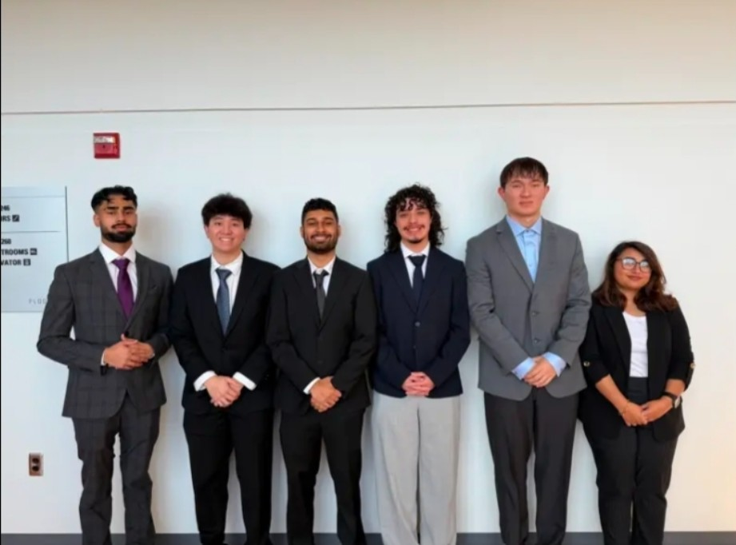
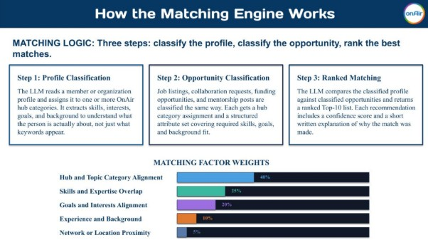
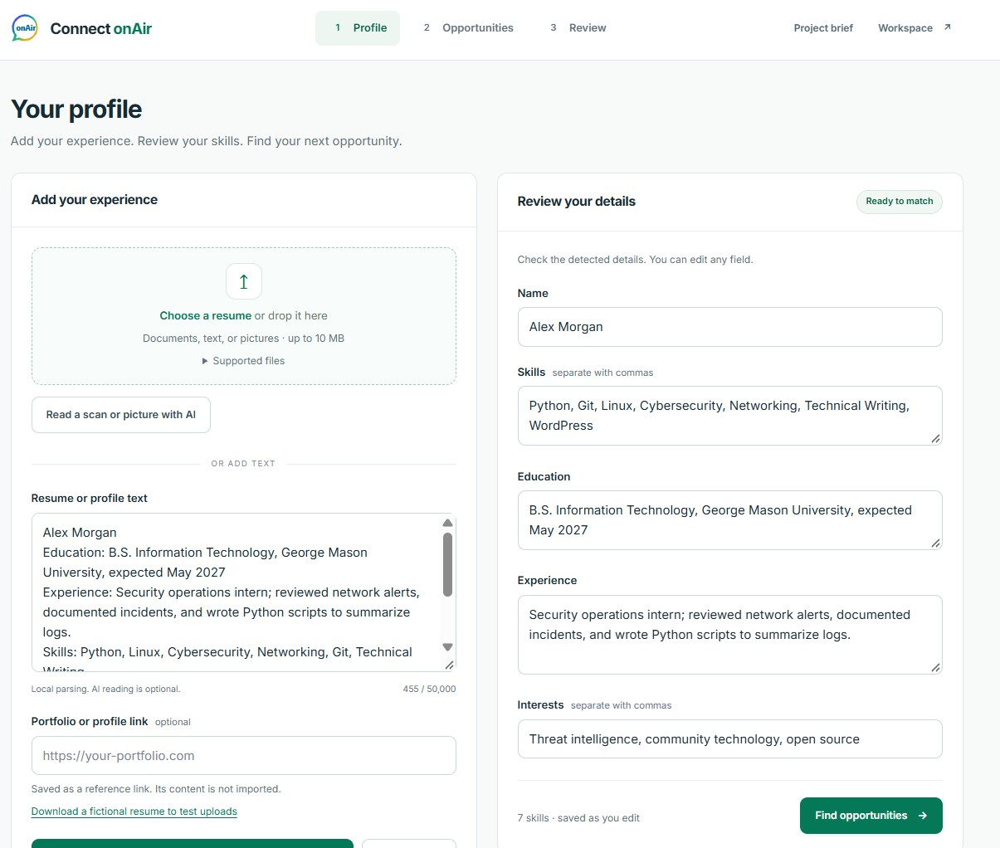

Project Overview & Sponsor Collaboration

My senior capstone at George Mason University has been one of the biggest highlights of my undergraduate journey. Working alongside a six-person IT team and our project sponsors at Connect onAir, we are building an AI-assisted profile matching, opportunity discovery, and curator review workflow prototype designed to help connect the right people with relevant opportunities faster and more accurately.
Collaborating directly with industry sponsors gave our team real-world context beyond a typical classroom prompt. Every meeting helped sharpen how our platform handles profile attributes, curator review steps, and clear user feedback.
My Role: Scope Manager & Lead Developer

Serving as both Scope Manager and Lead Developer challenged me to look at software engineering from two angles at once. As Scope Manager, I worked closely with our team lead, data manager, quality/schedule manager, risk manager, and communications manager to define realistic project boundaries and keep our deliverables aligned with sponsor goals.
As Lead Developer, I helped translate those requirements into working prototype screens, structured matching workflows, and clean technical documentation so our team could iterate confidently throughout the academic year.
Capstone Prototype Spotlight (Animated Viewer)
Click Expand Spotlight to smoothly animate the capstone workflow preview
using window.setInterval(), or click Shrink Spotlight to
return it to compact size.

Connect onAir Prototype: AI-assisted profile matching & curator review workflow.